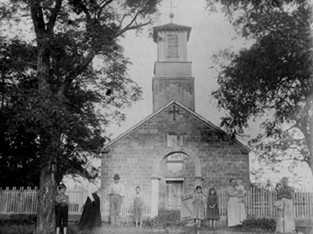

Chapel Hill

Chapel Hill existed not far from San Toy in Monroe Township, Perry County, from 1860 through the early 1900s. At one time it was a shipping hub and commercial center, with a thriving marketplace and, of course, the Catholic Church--St. Francis. Today a wooden sign and graveyard on Irish Ridge Road mark the location of Chapel Hill.
Back